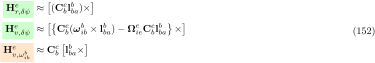

|
0.5.0
|
|
0.5.0
|
Pseudorange and Doppler observations are processed together.
![\begin{equation} \label{eq:eq-SppKF-unknowns}
\mathbf{x}^e =
\begin{tikzpicture}[baseline=-\the\dimexpr\fontdimen22\textfont2\relax,decoration=brace]
\matrix (m)[matrix of math nodes,left delimiter={[},right delimiter={]},
nodes={rectangle,text width=2.5em,align=center},row sep=0.3em, column sep=0.4em] {
\mathbf{r}^e \\
\mathbf{v}^e \\
dt_R \\
d\dotup{t}_R \\
dt_{ISB}^{S_2 \rightarrow S_1} \\
d\dotup{t}_{ISB}^{S_2 \rightarrow S_1} \\
\vdots \\
dt_{ISB}^{S_o \rightarrow S_1} \\
d\dotup{t}_{ISB}^{S_o \rightarrow S_1} \\
};
\draw [dash dot] (-0.75,1.9) -- (0.75,1.9);
\end{tikzpicture}
=
\begin{tikzpicture}[baseline=-\the\dimexpr\fontdimen22\textfont2\relax,decoration=brace]
\matrix (m)[matrix of math nodes,left delimiter={[},right delimiter={]},
nodes={rectangle,text width=20em,align=center},row sep=0.3em, column sep=0.4em] {
\text{Position [m]} \\
\text{Velocity [m/s]} \\
\text{Receiver clock error [m]} \\
\text{Receiver clock drift [m/s]} \\
\text{Inter-system clock error (System 2 to 1) [m]} \\
\text{Inter-system clock drift (System 2 to 1) [m/s]} \\
\vdots \\
\text{Inter-system clock error (System o to 1) [m]} \\
\text{Inter-system clock drift (System o to 1) [m/s]} \\
};
\draw [dash dot] (-3.75,1.9) -- (3.75,1.9);
\end{tikzpicture}
\end{equation}](form_286.svg)
![\begin{equation} \label{eq:eq-SppKF-processModel-systemModel}
\begin{tikzpicture}[baseline=-\the\dimexpr\fontdimen22\textfont2\relax,decoration=brace]
\matrix (m)[matrix of math nodes,left delimiter={(},right delimiter={)},nodes={rectangle,text width=2.5em,align=center},row sep=0.3em, column sep=0.4em]
{
\boldsymbol{v}^e \\
\boldsymbol{a}^e \\
d\dotup{t}_R \\
d\ddot{t}_R \\
d\dotup{t}_{ISB}^{S_2 \rightarrow S_1} \\
d\dotup{t}_{ISB}^{S_2 \rightarrow S_1} \\
\vdots \\
d\dotup{t}_{ISB}^{S_o \rightarrow S_1} \\
d\dotup{t}_{ISB}^{S_o \rightarrow S_1} \\
};
\draw[decorate,transform canvas={yshift=.5em},thick] (m-1-1.north west) -- node[above=2pt] {$\boldsymbol{\dotup{x}}^e$} (m-1-1.north east);
\draw [dash dot] (-0.75,1.9) -- (0.75,1.9);
\end{tikzpicture}
=
\begin{tikzpicture}[baseline=-\the\dimexpr\fontdimen22\textfont2\relax,decoration=brace]
\matrix (m)[matrix of math nodes,left delimiter={(},right delimiter={)},
nodes={rectangle,text width=2.5em,align=center},row sep=0.3em, column sep=0.4em]
{
\mathbf{0}_3 & \mathbf{I}_3 & \mathbf{0}_{3,1} & \mathbf{0}_{3,1} & \mathbf{0}_{3,1} & \mathbf{0}_{3,1} & \dots & \mathbf{0}_{3,1} & \mathbf{0}_{3,1} \\
\mathbf{0}_3 & \mathbf{0}_3 & \mathbf{0}_{3,1} & \mathbf{0}_{3,1} & \mathbf{0}_{3,1} & \mathbf{0}_{3,1} & \dots & \mathbf{0}_{3,1} & \mathbf{0}_{3,1} \\
\mathbf{0}_{1,3} & \mathbf{0}_{1,3} & 0 & 1 & 0 & 0 & \dots & 0 & 0 \\
\mathbf{0}_{1,3} & \mathbf{0}_{1,3} & 0 & 0 & 0 & 0 & \dots & 0 & 0 \\
\mathbf{0}_{1,3} & \mathbf{0}_{1,3} & 0 & 0 & 0 & 1 & \dots & 0 & 0 \\
\mathbf{0}_{1,3} & \mathbf{0}_{1,3} & 0 & 0 & 0 & 0 & \dots & 0 & 0 \\
\vdots & \vdots & \vdots & \vdots & \vdots & \vdots & \ddots & \vdots & \vdots \\
\mathbf{0}_{1,3} & \mathbf{0}_{1,3} & 0 & 0 & 0 & 0 & \dots & 0 & 1 \\
\mathbf{0}_{1,3} & \mathbf{0}_{1,3} & 0 & 0 & 0 & 0 & \dots & 0 & 0 \\
};
\draw[decorate,transform canvas={yshift=.5em},thick] (m-1-1.north west) -- node[above=2pt] {$\mathbf{F}$} (m-1-9.north east);
\draw [dash dot] (-5.75,1.9) -- (5.75,1.9);
\draw [dash dot] (-3.2,3.1) -- (-3.2,-3.2);
\end{tikzpicture}
\cdot
\begin{tikzpicture}[baseline=-\the\dimexpr\fontdimen22\textfont2\relax,decoration=brace]
\matrix (m)[matrix of math nodes,left delimiter={(},right delimiter={)},
nodes={rectangle,text width=2.5em,align=center},row sep=0.3em, column sep=0.4em]
{
\mathbf{r}^e \\
\mathbf{v}^e \\
dt_R \\
d\dotup{t}_R \\
dt_{ISB}^{S_2 \rightarrow S_1} \\
d\dotup{t}_{ISB}^{S_2 \rightarrow S_1} \\
\vdots \\
dt_{ISB}^{S_o \rightarrow S_1} \\
d\dotup{t}_{ISB}^{S_o \rightarrow S_1} \\
};
\draw[decorate,transform canvas={yshift=.5em},thick] (m-1-1.north west) -- node[above=2pt] {$\mathbf{x}^e$} (m-1-1.north east);
\draw [dash dot] (-0.75,1.9) -- (0.75,1.9);
\end{tikzpicture}
+
\mathbf{G} \cdot \boldsymbol{w}
\end{equation}](form_287.svg)
([18] Groves, ch. 9.4.2.2, eq. 9.148, p. 415)
Higher order terms are zero, so the exact solution is
([18] Groves, ch. 9.4.2.2, eq. 9.150, p. 416)
Clock modeling
 (random walk) and Frequency drift
(random walk) and Frequency drift 
(integrated random walk)
Velocity change due to user motion (Variances)
 is usually smaller
is usually smaller([18] Groves, ch. 9.4.2.2, p. 416-418)
Noise input matrix
![\begin{equation} \label{eq:eq-SppKF-processModel-processNoise-vanLoan-noiseInput}
\mathbf{G}
=
\begin{tikzpicture}[baseline=-\the\dimexpr\fontdimen22\textfont2\relax,decoration=brace]
\matrix (m)[matrix of math nodes,left delimiter={[},right delimiter={]},
nodes={rectangle,text width=2.5em,align=center},row sep=0.3em, column sep=0.4em]
{
\mathbf{0}_3 & \mathbf{0}_3 & \mathbf{0}_{3,1} & \mathbf{0}_{3,1} & \mathbf{0}_{3,1} & \mathbf{0}_{3,1} & \dots & \mathbf{0}_{3,1} & \mathbf{0}_{3,1} \\
\mathbf{0}_3 & \mathbf{C}_n^e & \mathbf{0}_{3,1} & \mathbf{0}_{3,1} & \mathbf{0}_{3,1} & \mathbf{0}_{3,1} & \dots & \mathbf{0}_{3,1} & \mathbf{0}_{3,1} \\
\mathbf{0}_{1,3} & \mathbf{0}_{1,3} & 1 & 0 & 0 & 0 & \dots & 0 & 0 \\
\mathbf{0}_{1,3} & \mathbf{0}_{1,3} & 0 & 1 & 0 & 0 & \dots & 0 & 0 \\
\mathbf{0}_{1,3} & \mathbf{0}_{1,3} & 0 & 0 & 1 & 0 & \dots & 0 & 0 \\
\mathbf{0}_{1,3} & \mathbf{0}_{1,3} & 0 & 0 & 0 & 1 & \dots & 0 & 0 \\
\vdots & \vdots & \vdots & \vdots & \vdots & \vdots & \ddots & \vdots & \vdots \\
\mathbf{0}_{1,3} & \mathbf{0}_{1,3} & 0 & 0 & 0 & 0 & \dots & 1 & 0 \\
\mathbf{0}_{1,3} & \mathbf{0}_{1,3} & 0 & 0 & 0 & 0 & \dots & 0 & 1 \\
};
\draw [dash dot] (-5.75,1.8) -- (5.75,1.8);
\draw [dash dot] (-3.2,3.1) -- (-3.2,-3.1);
\end{tikzpicture}
\end{equation}](form_301.svg)
Noise scale matrix
![\begin{equation} \label{eq:eq-SppKF-processModel-processNoise-vanLoan-noiseScale}
\mathbf{W}
=
\begin{tikzpicture}[baseline=-\the\dimexpr\fontdimen22\textfont2\relax,decoration=brace]
\matrix (m)[matrix of math nodes,left delimiter={[},right delimiter={]},
nodes={rectangle,text width=2.5em,align=center},row sep=0.3em, column sep=0.4em]
{
\mathbf{0}_3 & \mathbf{0}_3 & \mathbf{0}_{3,1} & \mathbf{0}_{3,1} & \mathbf{0}_{3,1} & \mathbf{0}_{3,1} & \dots & \mathbf{0}_{3,1} & \mathbf{0}_{3,1} \\
\mathbf{0}_3 & \mathbf{S}_{a}^{n} & \mathbf{0}_{3,1} & \mathbf{0}_{3,1} & \mathbf{0}_{3,1} & \mathbf{0}_{3,1} & \dots & \mathbf{0}_{3,1} & \mathbf{0}_{3,1} \\
\mathbf{0}_{1,3} & \mathbf{0}_{1,3} & \sigma_{c\phi}^2 & 0 & 0 & 0 & \dots & 0 & 0 \\
\mathbf{0}_{1,3} & \mathbf{0}_{1,3} & 0 & \sigma_{cf}^2 & 0 & 0 & \dots & 0 & 0 \\
\mathbf{0}_{1,3} & \mathbf{0}_{1,3} & 0 & 0 & {\sigma_{ISB,\phi}^{S_2 \rightarrow S_1}}^2 & 0 & \dots & 0 & 0 \\
\mathbf{0}_{1,3} & \mathbf{0}_{1,3} & 0 & 0 & 0 & {\sigma_{ISB,f}^{S_2 \rightarrow S_1}}^2 & \dots & 0 & 0 \\
\vdots & \vdots & \vdots & \vdots & \vdots & \vdots & \ddots & \vdots & \vdots \\
\mathbf{0}_{1,3} & \mathbf{0}_{1,3} & 0 & 0 & 0 & 0 & \dots & {\sigma_{ISB,\phi}^{S_o \rightarrow S_1}}^2 & 0 \\
\mathbf{0}_{1,3} & \mathbf{0}_{1,3} & 0 & 0 & 0 & 0 & \dots & 0 & {\sigma_{ISB,f}^{S_o \rightarrow S_1}}^2 \\
};
\draw [dash dot] (-5.75,2.25) -- (5.75,2.25);
\draw [dash dot] (-3.2,3.65) -- (-3.2,-3.65);
\end{tikzpicture}
\end{equation}](form_302.svg)
Van Loan algorithm
 and is the power spectral density of the noise )
and is the power spectral density of the noise )
 as
as
Uses GUI input values for , and .
![\begin{equation} \label{eq:eq-SppKF-processModel-processNoise-groves}
\mathbf{Q} =
\left[\begin{array}{cc:cc}
\frac{1}{3} S_a^\gamma \tau_s^3 & \frac{1}{2} S_a^\gamma \tau_s^2 & 0_{3,1} & 0_{3,1} \\
\frac{1}{2} S_a^\gamma \tau_s^2 & S_a^\gamma \tau_s & 0_{3,1} & 0_{3,1} \\
\hdashline
0_{1,3} & 0_{1,3} & S_{c \phi}^a \tau_s+\frac{1}{3} S_{c f}^a \tau_s^3 & \frac{1}{2} S_{c f}^a \tau_s^2 \\
0_{1,3} & 0_{1,3} & \frac{1}{2} S_{c f}^a \tau_s^2 & S_{c f}^a \tau_s
\end{array}\right]
\end{equation}](form_309.svg)
Uses calculated values for , and .
([18] Groves, ch. 9.4.2.2, eq. 9.152, p. 417-418)
The inter-system errors and drifts are assumed constant. Note: Groves does not estimate an inter-system drift ([18] Groves, Appendix G.8, p. G-23 - G-24), but we do for all models.
See Design matrix / Measurement sensitivity matrix
In detail for Kalman Filtering
![\begin{equation} \label{eq:eq-SppKF-measurementModel-sensitivityMatrix}
\begin{aligned}
\mathbf{H}_k
&=
\left[\begin{array}{cccccccccc}
\frac{-x^s+x_r}{\rho_s^s} & \frac{-y^s+y_r}{\rho_s^s} & \frac{-z^s+z_r}{\rho_r^s} & 0 & 0 & 0 & 1 & 0 & 0 & 0 \\
\frac{-x^s+x_r}{\rho_r^s} & \frac{-y^s+y_r}{\rho_r^s} & \frac{-z^s+z_r}{\rho_r^s} & 0 & 0 & 0 & 1 & 0 & 1 & 0 \\
\ldots & \ldots & \ldots & \ldots & \ldots & \ldots & \ldots & \ldots & \ldots & \ldots \\
\hdashline
-\frac{\mathbf{v}_x^s-\mathbf{v}_{r, x}}{\rho_r^s} & -\frac{\mathbf{v}_y^s-\mathbf{v}_{r, y}}{\rho_r^s} & -\frac{\mathbf{v}_z^s-\mathbf{v}_{r, z}}{\rho_r^s} & -\frac{x^s-x_r}{\rho_r^s} & -\frac{y^s-y_r}{\rho_r^s} & -\frac{z^s-z_r}{\rho_r^s} & 0 & 1 & 0 & 0 \\
-\frac{\mathbf{v}_x^s-\mathbf{v}_{r, x}^s}{\rho_r^s} & -\frac{\mathbf{v}_y^s-\mathbf{v}_{r, y}^s}{\rho_r^s} & -\frac{\mathbf{v}_z^s-\mathbf{v}_{r_r}^s}{\rho_r^s} & -\frac{x^s-x_r}{\rho_r^s} & -\frac{y^s-y_r}{\rho_r^s} & -\frac{z^s-z_r}{\rho_r^s} & 0 & 1 & 0 & 1 \\
\ldots & \ldots & \ldots & \ldots & \ldots & \ldots & \ldots & \ldots & \ldots & \ldots
\end{array}\right] \\
&=
\left[\begin{array}{cccccccccc}
-u_{rs,x} & -u_{rs,y} & -u_{rs,z} & 0 & 0 & 0 & 1 & 0 & 0 & 0 \\
-u_{rs,x} & -u_{rs,y} & -u_{rs,z} & 0 & 0 & 0 & 1 & 0 & 1 & 0 \\
\ldots & \ldots & \ldots & \ldots & \ldots & \ldots & \ldots & \ldots & \ldots & \ldots \\
\hdashline
-\frac{\mathbf{v}_x^s-\mathbf{v}_{r, x}}{\rho_r^s} & -\frac{\mathbf{v}_y^s-\mathbf{v}_{r, y}}{\rho_r^s} & -\frac{\mathbf{v}_z^s-\mathbf{v}_{r, z}}{\rho_r^s} & -u_{rs,x} & -u_{rs,y} & -u_{rs,z} & 0 & 1 & 0 & 0 \\
-\frac{\mathbf{v}_x^s-\mathbf{v}_{r, x}^s}{\rho_r^s} & -\frac{\mathbf{v}_y^s-\mathbf{v}_{r, y}^s}{\rho_r^s} & -\frac{\mathbf{v}_z^s-\mathbf{v}_{r_r}^s}{\rho_r^s} & -u_{rs,x} & -u_{rs,y} & -u_{rs,z} & 0 & 1 & 0 & 1 \\
\ldots & \ldots & \ldots & \ldots & \ldots & \ldots & \ldots & \ldots & \ldots & \ldots
\end{array}\right] \\
&\approx
\left[\begin{array}{cccccccccc}
-u_{rs,x} & -u_{rs,y} & -u_{rs,z} & 0 & 0 & 0 & 1 & 0 & 0 & 0 \\
-u_{rs,x} & -u_{rs,y} & -u_{rs,z} & 0 & 0 & 0 & 1 & 0 & 1 & 0 \\
\ldots & \ldots & \ldots & \ldots & \ldots & \ldots & \ldots & \ldots & \ldots & \ldots \\
\hdashline
0 & 0 & 0 & -u_{rs,x} & -u_{rs,y} & -u_{rs,z} & 0 & 1 & 0 & 0 \\
0 & 0 & 0 & -u_{rs,x} & -u_{rs,y} & -u_{rs,z} & 0 & 1 & 0 & 1 \\
\ldots & \ldots & \ldots & \ldots & \ldots & \ldots & \ldots & \ldots & \ldots & \ldots
\end{array}\right]
\end{aligned}
\end{equation}](form_310.svg)
([18] Groves, ch. 9.4.2.2, eq. 9.163, p. 420)
See NAV::GnssMeasurementErrorModel
Old state:
First we need to wait one epoch, in order to estimate the new inter system differences and Then we can transform the state with a matrix  with
with
![\begin{equation}\begin{bmatrix}
{ \mathbf{r}_{r} } \\
{ \mathbf{v}_{r} } \\
{ dt_r} \\
{ d\dotup{t}_r} \\ \hdashline
{ dt_{ISB}^{S_3 \rightarrow S_1}} = { dt^{S_3}} - { dt^{S_1}} \\
{ d\dotup{t}_{ISB}^{S_3 \rightarrow S_1}} = { d\dotup{t}^{S_3}} - { d\dotup{t}^{S_1}} \\
{ dt_{ISB}^{S_4 \rightarrow S_1}} = { dt^{S_4}} - { dt^{S_1}} \\
{ d\dotup{t}_{ISB}^{S_4 \rightarrow S_1}} = { d\dotup{t}^{S_4}} - { d\dotup{t}^{S_1}} \\
{ dt_{ISB}^{S_2 \rightarrow S_1}} = { dt^{S_2}} - { dt^{S_1}} \\
{ d\dotup{t}_{ISB}^{S_2 \rightarrow S_1}} = { d\dotup{t}^{S_2}} - { d\dotup{t}^{S_1}} \\ \hdashline
{ dt_{IFB}^{F_2 \rightarrow F_1}}
\end{bmatrix}_{\text{new}}
=
\overbrace{
\left[\begin{array}{cccc:cccccc:c}
\mathbf{I}_3 & \mathbf{0}_3 & 0 & 0 & \mathbf{0}_{3,1} & \mathbf{0}_{3,1} & \mathbf{0}_{3,1} & \mathbf{0}_{3,1} & \mathbf{0}_{3,1} & \mathbf{0}_{3,1} & 0 \\
\mathbf{0}_3 & \mathbf{I}_3 & 0 & 0 & \mathbf{0}_{3,1} & \mathbf{0}_{3,1} & \mathbf{0}_{3,1} & \mathbf{0}_{3,1} & \mathbf{0}_{3,1} & \mathbf{0}_{3,1} & 0 \\
\mathbf{0}_{1,3} & \mathbf{0}_{1,3} & 1 & 0 & 0 & 0 & 0 & 0 & -1 & 0 & 0 \\
\mathbf{0}_{1,3} & \mathbf{0}_{1,3} & 0 & 1 & 0 & 0 & 0 & 0 & 0 & -1 & 0 \\[0.1em] \hdashline
\mathbf{0}_{1,3} & \mathbf{0}_{1,3} & 0 & 0 & 1 & 0 & 0 & 0 & -1 & 0 & 0 \\[0.3em]
\mathbf{0}_{1,3} & \mathbf{0}_{1,3} & 0 & 0 & 0 & 1 & 0 & 0 & 0 & -1 & 0 \\[0.3em]
\mathbf{0}_{1,3} & \mathbf{0}_{1,3} & 0 & 0 & 0 & 0 & 1 & 0 & -1 & 0 & 0 \\[0.3em]
\mathbf{0}_{1,3} & \mathbf{0}_{1,3} & 0 & 0 & 0 & 0 & 0 & 1 & 0 & -1 & 0 \\[0.3em]
\mathbf{0}_{1,3} & \mathbf{0}_{1,3} & 0 & 0 & 0 & 0 & 0 & 0 & -1 & 0 & 0 \\[0.3em]
\mathbf{0}_{1,3} & \mathbf{0}_{1,3} & 0 & 0 & 0 & 0 & 0 & 0 & 0 & -1 & 0 \\[0.3em] \hdashline
\mathbf{0}_{1,3} & \mathbf{0}_{1,3} & 0 & 0 & 0 & 0 & 0 & 0 & 0 & 0 & 1 \\[0.3em]
\end{array}\right]
}^{\mathbf{D}}
\cdot
\begin{bmatrix}
{ \mathbf{r}_{r} } \\
{ \mathbf{v}_{r} } \\
{ dt_r} \\
{ d\dotup{t}_r} \\ \hdashline
{ dt_{ISB}^{S_3 \rightarrow S_2}} = { dt^{S_3}} - { dt^{S_2}} \\
{ d\dotup{t}_{ISB}^{S_3 \rightarrow S_2}} = { d\dotup{t}^{S_3}} - { d\dotup{t}^{S_2}} \\
{ dt_{ISB}^{S_4 \rightarrow S_2}} = { dt^{S_4}} - { dt^{S_2}} \\
{ d\dotup{t}_{ISB}^{S_4 \rightarrow S_2}} = { d\dotup{t}^{S_4}} - { d\dotup{t}^{S_2}} \\
{ dt_{ISB}^{S_1 \rightarrow S_2}} = { dt^{S_1}} - { dt^{S_2}} \\
{ d\dotup{t}_{ISB}^{S_1 \rightarrow S_2}} = { d\dotup{t}^{S_1}} - { d\dotup{t}^{S_2}} \\ \hdashline
{ dt_{IFB}^{F_2 \rightarrow F_1}}
\end{bmatrix}_{\text{old}}
\end{equation}](form_319.svg)
Old state:
We can transform the state with a matrix with
![\begin{equation}\begin{bmatrix}
{ \mathbf{r}_{r} } \\
{ \mathbf{v}_{r} } \\
{ dt_r} \\
{ d\dotup{t}_r} \\ \hdashline
\cancel{{ dt_{ISB}^{S_2 \rightarrow S_2}} = 0} \\
\cancel{{ d\dotup{t}_{ISB}^{S_2 \rightarrow S_2}} = 0} \\
{ dt_{ISB}^{S_3 \rightarrow S_2}} = { dt^{S_3}} - { dt^{S_2}} \\
{ d\dotup{t}_{ISB}^{S_3 \rightarrow S_2}} = { d\dotup{t}^{S_3}} - { d\dotup{t}^{S_2}} \\
{ dt_{ISB}^{S_4 \rightarrow S_2}} = { dt^{S_4}} - { dt^{S_2}} \\
{ d\dotup{t}_{ISB}^{S_4 \rightarrow S_2}} = { d\dotup{t}^{S_4}} - { d\dotup{t}^{S_2}} \\\hdashline
{ dt_{IFB}^{F_2 \rightarrow F_1}}
\end{bmatrix}_{\text{new}}
=
\overbrace{
\left[\begin{array}{cccc:cccccc:c}
\mathbf{I}_3 & \mathbf{0}_3 & 0 & 0 & \mathbf{0}_{3,1} & \mathbf{0}_{3,1} & \mathbf{0}_{3,1} & \mathbf{0}_{3,1} & \mathbf{0}_{3,1} & \mathbf{0}_{3,1} & 0 \\
\mathbf{0}_3 & \mathbf{I}_3 & 0 & 0 & \mathbf{0}_{3,1} & \mathbf{0}_{3,1} & \mathbf{0}_{3,1} & \mathbf{0}_{3,1} & \mathbf{0}_{3,1} & \mathbf{0}_{3,1} & 0 \\
\mathbf{0}_{1,3} & \mathbf{0}_{1,3} & 1 & 0 & 0 & 0 & 0 & 0 & 0 & 0 & 0 \\
\mathbf{0}_{1,3} & \mathbf{0}_{1,3} & 0 & 1 & 0 & 0 & 0 & 0 & 0 & 0 & 0 \\[0.1em] \hdashline
\mathbf{0}_{1,3} & \mathbf{0}_{1,3} & 0 & 0 & 0 & 0 & 0 & 0 & 0 & 0 & 0 \\[0.3em]
\mathbf{0}_{1,3} & \mathbf{0}_{1,3} & 0 & 0 & 0 & 0 & 0 & 0 & 0 & 0 & 0 \\[0.3em]
\mathbf{0}_{1,3} & \mathbf{0}_{1,3} & 0 & 0 & -1 & 0 & 1 & 0 & 0 & 0 & 0 \\[0.3em]
\mathbf{0}_{1,3} & \mathbf{0}_{1,3} & 0 & 0 & 0 & -1 & 0 & 1 & 0 & 0 & 0 \\[0.3em]
\mathbf{0}_{1,3} & \mathbf{0}_{1,3} & 0 & 0 & -1 & 0 & 0 & 0 & 1 & 0 & 0 \\[0.3em]
\mathbf{0}_{1,3} & \mathbf{0}_{1,3} & 0 & 0 & 0 & -1 & 0 & 0 & 0 & 1 & 0 \\[0.3em] \hdashline
\mathbf{0}_{1,3} & \mathbf{0}_{1,3} & 0 & 0 & 0 & 0 & 0 & 0 & 0 & 0 & 1 \\[0.3em]
\end{array}\right]
}^{\mathbf{D}}
\cdot
\begin{bmatrix}
{ \mathbf{r}_{r} } \\
{ \mathbf{v}_{r} } \\
{ dt_r} \\
{ d\dotup{t}_r} \\ \hdashline
{ dt_{ISB}^{S_2 \rightarrow S_1}} = { dt^{S_2}} - { dt^{S_1}} \\
{ d\dotup{t}_{ISB}^{S_2 \rightarrow S_1}} = { d\dotup{t}^{S_2}} - { d\dotup{t}^{S_1}} \\
{ dt_{ISB}^{S_3 \rightarrow S_1}} = { dt^{S_3}} - { dt^{S_1}} \\
{ d\dotup{t}_{ISB}^{S_3 \rightarrow S_1}} = { d\dotup{t}^{S_3}} - { d\dotup{t}^{S_1}} \\
{ dt_{ISB}^{S_4 \rightarrow S_1}} = { dt^{S_4}} - { dt^{S_1}} \\
{ d\dotup{t}_{ISB}^{S_4 \rightarrow S_1}} = { d\dotup{t}^{S_4}} - { d\dotup{t}^{S_1}} \\\hdashline
{ dt_{IFB}^{F_2 \rightarrow F_1}}
\end{bmatrix}_{\text{old}}
\end{equation}](form_320.svg)
After a transformation, the covariance matrix has also to be adapted by error propagation